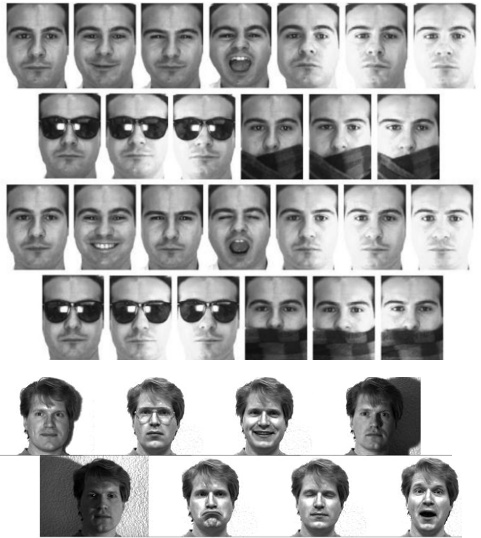

Latest News
* July 2018: Our paper Coping with Context Change in Open-Ended Object Recognition without Explicit Context Information got accepted at IROS2018.
* July 2018: I will be a Faculty of Science and Engineering (FSE Fellow) at Artificial Intelligence & Cognitive Engineering, Artificial Intelligence department, University of Groningen, the Netherlands.
* December 2017: Bin-Picking Synthetic Dataset is now available here! This dataset contains RGB and depth images captured from multiple views in five different physically feasible bin picking scenarios.
* November 2017: Our paper Perceiving, Learning, and Recognizing 3D Objects: An Approach to Cognitive Service Robots got accepted at AAAI2018.
* June 2017: An open-source implementation of the GOOD descriptor is now available on here!
* May 2017: Restaurant Object Dataset v.1.0 (RGB-D) is now available here! It contains 306 views of one instance of each category (Bottle, Bowl, Flask, Fork, Knife, Mug, Plate, Spoon, Teapot, and Vase), and 31 views of Unknown objects views (e.g. views that belong to the furniture).
* April 2017: New journal paper accepted at Neurocomputing journal: Towards Lifelong Assistive Robotics: A Tight Coupling between Object Perception and Manipulation.
* Jan 2017: I will be a research intern at ICVL Lab, Imperial Colledge London, UK.
Research & Publication
My research interests focus on the intersection of robotics, machine learning and machine vision. I am interested in developing algorithms for an adaptive perception system based on interactive environment exploration and open-ended learning, which enables robots to learn from past experiences and interact with human users. I have been investigating on active perception, where robots use their mobility and manipulation capabilities not only to gain the most useful perceptual information to model the world, but also to predict the next best view for improving detection and manipulation performances. I have evaluated my works on different platforms including PR2, robotic arms, and humanoid robots. My up-to-date list of publications and corresponding BibTeX files can be found on my Google scholar account .
My research is summarized by the following projects:
Look Further to Recognize Better: Learning Shared Topics and Category-Specific Dictionaries for Open-Ended 3D Object Recognition
In human-centric environments, fine-grained object categorization is as essential as basic-level object categorization. In this work, each object is represented using a set of general latent topics and category-specific dictionaries. The general topics encode the common patterns of all categories, while the category-specific dictionary describes the content of each category in details. We discovered both sets of general and specific representations in an unsupervised fashion and updated them incrementally using new object views.
under review
Demo1
Interactive Open-Ended Learning Approach for Recognizing 3D Object Category and Grasp Affordance Concurrently
This paper presents an interactive open-ended learning approach to recognize multiple objects and their grasp affordances concurrently. This is an important
contribution in the field of service robots since no matter how extensive the training data used for batch learning, a robot might always be confronted with an unknown object when operating in human-centric environments. Our approach has two main branches. The first branch is related to open-ended 3D object category learning and recognition. The second branch is associated with learning and recognizing the configuration of grasps in a reasonable amount of time.
under review
Demo1 --- Demo2
Coping with Context Change in Open-Ended Object Recognition without Explicit Context Information
One of the main challenges in unconstrained human environments is to cope with the effects of context change. This paper presents two main contributions: (1) an approach for evaluating open-ended object category learning and recognition methods in multi-context scenarios; (2) evaluation of different object category learning and recognition approaches regarding their ability to cope with the effects of context change.
IROS2018 (to appear)
Demo: multi contexts open-ended scenario
Perceiving, Learning, and Recognizing 3D Objects: An Approach to Cognitive Service Robots
This paper proposes a cognitive architecture designed to create a concurrent 3D object category learning and recognition in an interactive and open-ended manner. In particular, this cognitive architecture provides automatic perception capabilities that will allow robots to detect objects in highly crowded scenes and learn new object categories from the set of accumulated experiences in an incremental and open-ended way. Moreover, it supports constructing the full model of an unknown object in an on-line manner and predicting next best view for improving object detection and manipulation performance.
AAAI2018
Demo1 ---
Demo2 ---
Demo3
Active Multi-View 6D Object Pose Estimation and Camera Motion Planning in the Crowd
In this project, we developed a novel unsupervised Next-Best-View (NBV) prediction algorithm to improve object detection and manipulation performance. Particularly, the ability to predict the NBV point is important for mobile robots performing tasks in everyday environments. In active
scenarios, whenever the robot fails to detect or manipulate objects from the current view point, it is able to predict the next best view position, goes there and captures a new scene to improve the knowledge of the environment. This may increase the object detection and manipulation performance.
ICCV2017-WS
Bin-Picking Synthetic Dataset (RGB-D)
Hierarchical Object Representation for OpenEnded Object Category Learning and Recognition (Local LDA)
This paper proposes an open-ended 3D object recognition system which concurrently learns both the object categories and the statistical features for encoding objects. In particular, we propose an extension of Latent Dirichlet Allocation to learn structural semantic features (i.e. topics), from low-level feature co-occurrences, for each category independently. Moreover, topics in each category are discovered in an unsupervised fashion and are updated incrementally using new object views. In this way, the advantage of both the local hand-crafted and the structural semantic features have been considered in an efficient way.
NIPS2016 ---
TPAMI2018 (under review)
Demo1 ---
Demo2
GOOD: A Global Orthographic Object Descriptor for 3D Object Recognition and Manipulation
The Global Orthographic Object Descriptor (GOOD) has been designed to be robust, descriptive and efficient to compute and use. GOOD descriptor has two outstanding characteristics: (1) Providing a good trade-off among: descriptiveness, robustness, computation time, memory usage; (2) Allowing concurrent object recognition and pose estimation for manipulation. The performance of the proposed object descriptor is compared with the main state-of-the-art descriptors. Experimental results show that the overall classification performance obtained with GOOD is comparable to the best performances obtained with the state-of-the-art descriptors. Concerning memory and computation time, GOOD clearly outperforms the other descriptors. The current implementation of GOOD descriptor supports several functionalities for 3D object recognition and object manipulation.
Pattern Recognition Letters ---
IROS2016
Demo1 ---
Demo2
Source Code (GitHub) ---
Part of PCL 1.9
Towards Lifelong Assistive Robotics: A Tight Coupling between Object Perception and Manipulation
In this work, we propose a cognitive architecture designed to create a tight coupling between perception and manipulation for assistive robots. This is necessary for assistive robots, not only to perform manipulation tasks in a reasonable amount of time and in an appropriate manner, but also to robustly adapt to new environments by handling new objects. In particular, this cognitive architecture provides perception capabilities that will allow robots to, incrementally learn object categories from the set of accumulated experiences and reason about how to perform complex tasks.
Neurocomputing Journal ---
RoboCup2016 ---
IROS2015
Demo1 ---
Demo2 ---
Demo3
Interactive Open-Ended Learning for 3D Object Recognition: An Approach and Experiments
This work presents an efficient approach capable of learning and recognizing object categories in an interactive and open-ended manner. In particular, we mainly focus on two state-of-the-art questions: (1) How to automatically detect, conceptualize and recognize objects in 3D scenes in an open-ended manner? (2) How to acquire and use high-level knowledge obtained from the interaction with human users, namely when they provide category labels, in order to improve the system performance?
Journal of Intelligent and Robotic Systems-
--
RAS Journal ---
IROS2014
Demo1 ---
Demo2
Restaurant Object Dataset v.1.0 (RGB-D)
Learning to Grasp Familiar Objects using Object View Recognition and Template Matching

In this work, interactive object view learning and recognition capabilities are integrated in the process of learning and recognizing grasps. The object view recognition module uses an interactive incremental learning approach to recognize object view labels. The grasp pose learning approach uses local and global visual features of a demonstrated grasp to learn a grasp template associated with the recognized object view. A grasp distance measure based on Mahalanobis distance is used in a grasp template matching approach to recognize an appropriate grasp pose.
IROS2016
Demo1 ---
Demo2
Face Recognition Using Single Normal Reference Image and Statistical Features (Master Thesis)

Many types of research have been conducted to improve the accuracy of face recognition techniques. The majority of reported techniques make use of databases where a number of images are available for each person. Since collecting face samples is a challenging task, there are some face recognition methods that work based on a single sample per person (SSPP). I studied face recognition using single normal reference image and statistical features. We encoded the face information by making use of a Modular Principal Component Analysis. The nearest neighbour classifier was finally used to assess the dissimilarity between the target face and trained faces.
Humanoid Robots (RoboCup-HL)
After obtaining extensive knowledge about real-time intelligent robotic systems in Middle-Size League, I tried to make humanoid robots and formed two new robotic teams namely Persia and BehRobot for participating in RoboCup humanoid leagues. We worked on three different types of humanoid robots including kid-size (height = 59cm, weight = 4kg), teen-size (height = 93cm, weight = 7Kg) and adult-size (height = 155cm, weight = 11:5Kg) robots. We were one of the successful teams in the humanoid leagues and achieved several ranks in national and international competitions.
ICARSC2016
Demo1
Middle Size Soccer Robots (RoboCup-MSL)
During the second year of my undergraduate program, I got familiar with RoboCup competitions. I formed a team of Middle Size Soccer Robots (RoboCup-MSL) namely
ADRO in 2006. We provided five player robots and one goalkeeper robot with similar structure but equipped with some additional accessories and sensors. Through this teamwork, I took an active role in the development of the robots’ software. Furthermore, I worked on the mechanical design of the robot via Autodesk Inventor. We achieved several ranks in national and international RoboCup competitions.
Demo1
A Novel Morphological Method for Detection and Recognition of Vehicle License Plates
License plate detection and recognition is an image-processing technique used to identify a vehicle by its license plate. This notable technology has got multiple
applications in various traffic and security cases. This study presented a novel method of identifying and recognizing license plates based on the morphology and template matching. The algorithm started with preprocessing and signal conditioning. Next license plate is localized using morphological operators. Then a template matching scheme will be used to recognize the digits and characters within the plate.
American Journal of Applied Sciences
-
-- EISIC2011
Iranian Car Plate Dataset v.1.0 (RGB)
Open Positions & Students
If you are interested in doing your Bachelor/Master/PhD thesis in one of the above areas, or working on a project with me, please send me an e-mail including:
- Short CV
- Short motivation letter
The motivation letter should state (½ - 1 page):
- Topics that you are interested in
- Type of project (theoretical/applied)
- Intended starting date
- your relevant experiences
- Programming languages and related